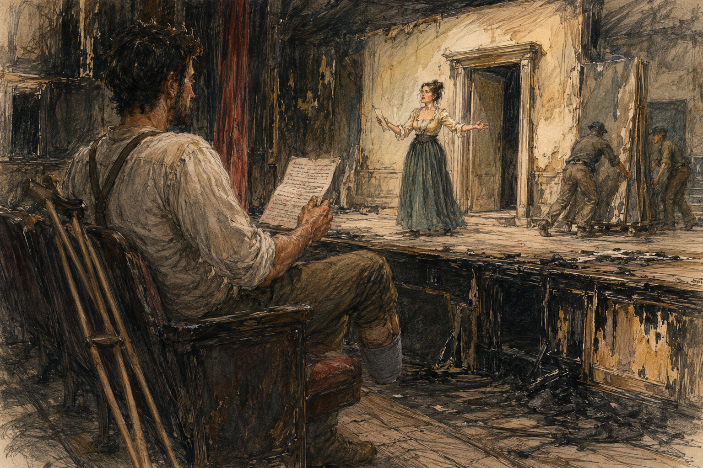
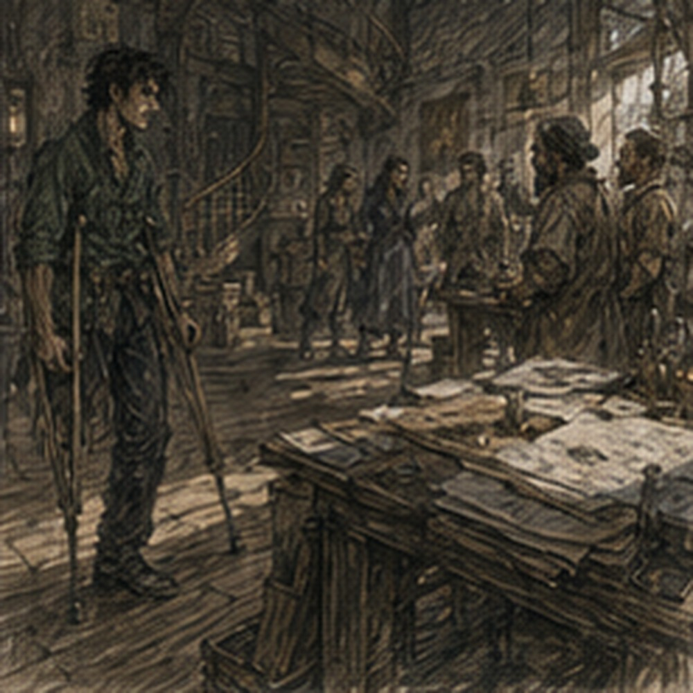

The page was not mine.
This was irritating because I had already decided not to go back.
Probably had been an error.
I found the page on the table after breakfast.
Folded.
Smoke smell still faint in the paper.
My line marked in charcoal.
NO MAN WHO INTENDS TO RETURN.
Not mine.
Theatre property.
Possibly Teren's.
I could have given it to the keeper and asked her to send someone.
That would have been absurd.
I could have left it at the Guild.
More absurd.
I could have thrown it away.
Wrong.
So I went back to the theatre.
This was not returning.
It was returning an object.
Different category.
The dark green shirt stayed upstairs.
It smelled faintly of smoke and date.
I wore blue.
This proved nothing.
The theatre looked smaller in daylight.
Also uglier.
Good.
The wide doors were open.
One had a dark smear above it where smoke had escaped.
A ladder stood against the front wall.
Someone on the ladder was scraping black residue from stone with a stiff brush.
Nobody stopped me.
Inside, the audience hall had been transformed into work.
Half the seats were covered with cloth.
Two rows had been moved.
A man was mopping water from the aisle.
Someone else was carrying a bucket that smelled like vinegar.
The curtain was partly down.
One side looked darker than the other.
The stage was full of people not acting.
This was almost more interesting.
No.
I was returning a page.
I looked for someone with authority.
This was difficult because theatre people dressed like categories had died.
A woman in trousers was measuring a scorched board.
A man in a robe that belonged to yesterday's magistrate was carrying nails.
A young woman in ordinary clothes stood onstage saying:
“No. Again.”
Someone behind scenery answered:
“I did.”
“No, you said the word. You didn't arrive.”
“What the fuck does that mean?”
“Again.”
Interesting.
Not my problem.
I found the soot-shirted woman from last night near the side aisle.
Same woman.
Less soot.
Still shirt.
She was arguing with a carpenter about a blackened panel.
“Cut it out.”
“It's surface.”
“It smells.”
“It will stop smelling.”
“When?”
“Eventually.”
“We perform before eventually.”
There.
Schedule pressure.
Not tragedy.
A problem with a clock.
The carpenter scraped the panel with a knife.
Black dust fell.
“Behind it is clean.”
“Then remove the front.”
“That is called the board.”
“Then replace the board.”
“With what?”
She pointed toward three stacked flats.
He looked offended.
“Those are painted.”
“So paint another.”
“Today?”
“Yes.”
“This is why actors should not own buildings.”
“I am not an actor.”
“Worse.”
They both noticed me at the same time.
Not because I mattered.
Because I had stopped too close to the argument.
The carpenter pointed.
“Don't stand there.”
I moved.
Immediately.
Personal growth.
The soot-shirted woman saw the crutches and pointed to a wider patch of aisle instead.
“There.”
“Thank you.”
“That wasn't kindness. We need the lane.”
“Still useful.”
She returned to the board.
I waited until she was done insulting the carpenter's timetable.
Then she saw the folded page in my hand properly.
She saw me.
Looked at the crutches.
Looked at my face.
Then at the folded page in my hand.
“Oh.”
Good.
Recognition without reverence.
“I took this by accident.”
She held out a hand.
I gave it to her.
She unfolded it.
“That's Teren's.”
“Good.”
“He'll complain.”
“Excellent.”
She folded it again.
I waited.
That was the errand.
Done.
I should leave.
She tucked the page into the back of her waistband and turned toward the stage.
“Thanks.”
“You're welcome.”
I turned toward the door.
Then stopped.
Not dramatically.
Because someone onstage said my line.
Wrong.
Not morally wrong.
Wrong in a way I could not name.
“No man who intends to return,” the voice said.
Flat.
The woman onstage replied:
“Then my husband is safe.”
Nothing.
No audience.
Of course nothing.
The actor behind the scenery said, “That's what he said.”
The woman onstage said, “No.”
“He did.”
“Not like that.”
I turned back.
Bad decision.
The soot-shirted woman had already walked away.
I could leave.
I did not.
The line came again.
“No man who intends to return.”
Different.
Slower.
The woman onstage shook her head.
“Too much.”
“What was wrong?”
“You're announcing the joke.”
“I am literally announcing a line.”
“Not the same thing.”
I wanted to know.
This was dangerous.
I moved closer to the stage.
Not backstage.
Audience side.
Safer.
Mostly.
A length of rope crossed one aisle.
I went around.
A man carrying two chairs nearly backed into me.
He saw me.
“Sorry.”
This was an improvement over MOVE.
I stopped near the front row.
The woman onstage saw me.
She was the same actor who had answered my line last night.
I recognized her now without stage light.
She pointed.
“You.”
I looked behind me.
“No, you.”
“I returned the page.”
“Good.”
That was not enough instruction.
She came to the edge of the stage.
“Say it.”
“No.”
Her eyebrows went up.
“I am not in the play.”
“You were last night.”
“I was behind a curtain.”
“So?”
“So that is not a play.”
“It was to the audience.”
I hated that answer.
“Why?”
She looked at me.
“What?”
“Why did they laugh?”
There.
Question escaped.
Unfortunate.
She smiled.
Not kindly.
Not cruelly either.
“Which time?”
“Second.”
“Because they knew what was coming.”
“That makes no sense. They had not heard the next line.”
“They knew something was coming.”
“How?”
She shrugged.
“Because I let them.”
That was useless.
I looked at the empty seats.
“No audience now.”
“Exactly.”
“What are you doing?”
“Trying to find it again.”
“Find what?”
“The scene.”
I stared.
“The scene is written.”
She laughed.
“No.”
Someone behind scenery said, “Thank you.”
She ignored him.
I looked toward the wings.
The unseen actor was probably Teren.
Maybe not.
No need to know.
The woman onstage said, “Can you read?”
“This question has become hostile.”
“Can you?”
“Yes.”
“Good. Come here.”
“No.”
“Why?”
“Because my errand is complete.”
“Then leave.”
I should have.
She turned away.
“Again,” she called.
The hidden actor said the line.
Badly.
Or differently.
I still did not know the word.
I stayed.
This was the choice.
Annoying.
The woman looked back over her shoulder.
“Still here?”
“Yes.”
“Then read.”
I looked at the stage steps.
Three.
No rail.
Of course.

“I am not coming up there.”
She looked.
Actually looked.
At the steps.
At the crutches.
“Fine.”
She pointed to the front row.
“Sit.”
“I can stand.”
“Everyone says that until rehearsal.”
I sat.
Ordinary theatre seat.
Worse than my tavern chair.
Fine.
She disappeared into the wing and returned with another page.
Not mine.
She brought it down herself.
Good.
She handed it to me.
“Read only the marked line.”
There were several.
“One?”
“One.”
“What am I doing?”
“Nothing.”
“That is not possible.”
“It is for actors.”
“I am not an actor.”
“Excellent. Then it should be easy.”
This profession was built from traps.
She climbed back onstage.
The hidden actor was now visible.
Not Teren.
A different man.
Good.
No new name.
He stood near a false doorway.
The woman reset herself.
Not physically at first.
Then physically.
Shoulders changed.
Face changed.
She looked older somehow.
Not actually.
Then she said:
“Who walks beyond the grave?”
I read.
“No man who intends to return.”
She paused.
Not long.
Long enough that I noticed.
Then:
“Then my husband is safe.”
No audience.
No laugh.
She stopped.
“Again.”
“What changed?”
“Again.”
I read it again.
Same words.
I tried to make it the same.
Failed.
Because now I knew she was listening.
“No man who intends to return.”
She answered immediately.
“Then my husband is safe.”
Stopped.
“No.”
“What?”
“You waited.”
“I waited because you waited.”
“I waited after you.”
“Yes.”
“That was my wait.”
“How do I distinguish your wait from mine?”
“Don't take it.”
This was nonsense.
“Again.”
Third.
I read faster.
She cut in sooner.
Stopped.
“No.”
“What now?”
“You helped.”
“I read.”
“You pushed.”
“With what?”
“The end.”
I looked at the sentence.
There was no pushing in punctuation.
“You are inventing invisible things.”
“Yes.”
At least she admitted it.
“Again.”
I should leave.
I did not.
Fourth.
I tried not to help.

Whatever that meant.
I read the line as if I were telling Hessa a symptom.
Accurate.
Unadorned.
“No man who intends to return.”
The woman onstage looked at me.
Then away.
Then said:
“Then my husband is safe.”
The hidden man laughed.
Not audience laugh.
Small.
The woman pointed at me.
“That.”
“What?”
“That was closer.”
“To last night?”
“No.”
I frowned.
“Then to what?”
“To what I need now.”
That was worse.
Because it meant there was no fixed target.
Or the target changed with context.
No.
Do not make a system.
I put the thought away.
Personal record.
“Why?”
I asked.
She sat on the edge of the stage.
“Because last night you sounded like you didn't care whether the line was funny.”
“I didn't know it was funny.”
“Exactly.”
“So ignorance is acting.”
“No.”
“Then.”
“You gave me room.”
Room.
Vague.
Dangerous.
“Room for what?”
“To make it funny.”
“That seems like your job.”
“It is.”
There.
That answer I understood.
My line was not the joke alone.
Her response was not the joke alone.
The room had done something too.
Last night the audience had already seen the line once.
Then heard it again in a new place.
They had memory.
Expectation.
Smoke.
Fear.
Relief.
No.
Too many variables.
I stopped.
The woman watched my face.
“You're doing something.”
“Thinking.”
“Stop.”
Everyone in my life had the same solution.
“Again?”
“Yes.”
We did it again.
And again.
Not many.
Four more.
Each different in ways I could not reliably identify.
Between the second and third, somebody rolled a damaged scenery panel across the stage behind her.
She stopped.
Waited.
Then began from the preceding line instead of mine.
I looked at the page.
“That isn't where we were.”
“I know.”
“Then why go back?”
“Because he made noise.”
The man with the panel called, “Sorry.”
“You're not,” she said.
“No.”
He kept rolling.
She looked at me.
“Again.”
“From where?”
“Your line.”
“You just restarted farther back.”
“Yes.”
“Why?”
“Because I needed to arrive at your line.”
“You were already there.”
“No.”
This profession continued to reject spatial language.
I read.
“No man who intends to return.”
She answered.
Stopped.
Shook her head.
“Again.”
“What was wrong?”
“I arrived before you.”
“You were standing there.”
“Not physically.”
I lowered the page.
“I am beginning to think none of you know what words mean.”
“That helps.”
“How?”
“When you stop trying to solve them.”
“I have never once done that.”
“I noticed.”
Third.
Then fourth.
On one attempt I accidentally looked down at the page until the final word.
She stopped immediately.
“No.”
“What?”
“You disappeared.”
“I was reading.”
“Exactly.”
“I need the page.”
“Then use it.”
“I did.”
“Use it less.”
“That is not measurable.”
“No.”
I hated her.
Also, annoyingly, on the next attempt I looked up sooner.
It felt different.
Not better.
Different.
She did not stop me.
That was worse than praise.
Each attempt remained different in ways I could not reliably identify.
Once she stopped me before the line finished.
Once she waited so long after that I thought I had missed another cue.
Once the hidden actor crossed behind her and the line suddenly felt like it belonged to him even though he said nothing.
I did not understand any of this.
Good.
I hated that it was good.
The soot-shirted woman passed carrying fabric.
The fabric was wet at one end and scorched at the other.
Two people behind her were carrying a box of metal lamp fittings.
Someone farther backstage shouted:
“Save the hinges!”
Another voice answered:
“The hinges are fine!”
“Then stop stepping on them!”
Nobody seemed traumatized correctly.
They seemed busy.
I liked that more than I should have.
The soot-shirted woman looked at me in the front row.
“Page returned?”
“Yes.”
“Then why are you here?”
I opened my mouth.
The woman onstage answered:
“He stayed.”
The soot-shirted woman shrugged.
“His problem.”
Correct.
She kept walking.
Nobody recruited me.
Nobody cared enough.
Excellent.
We tried the line again.
Then a carpenter shouted from backstage that they needed the stage clear.
The woman stood.
“Done.”
That was abrupt.
“What?”
“Stage clear.”
“But.”
I stopped.
But what?
We had not reached an answer.
There probably was not one.
She took the page from me.
“Tomorrow?”
I stared.
“No.”
“Fine.”
She walked away.
That was it.
No pressure.
No invitation.
No schedule.
She had asked like she might ask whether I wanted another cup.
I sat for another moment.
The stage emptied.
People moved boards.
Someone carried the false doorway away.
The scene disappeared physically.
That bothered me.
Also interesting.
I stood.
Crutches.
Right foot.
No hand problem.
No residual-limb problem.
I left.
Outside, I was angry.
Not at theatre.
At myself.
I had returned the page.
Then stayed.
No fire.
No crowd.
No emergency.
No one needed me.
That was the problem.
I walked toward the Guild.
Halfway there I turned around.
Not back to the theatre.
Just around because I had passed a food stall.
Important.
I bought a meat pie.
Two.
Sat near a fountain.
Ate.
Tried not to think about the line.
Failed.
No man who intends to return.
Same words.
Last night funny.
Today not funny.
Then closer.
Closer to what?
I did not know.
I wanted to know.
This was becoming dangerous.
Jorren found me with the second pie.
“You look annoyed.”
“I went back.”
“To Hessa?”
“Theatre.”
He stopped.
“Oh.”
“That is not an appropriate response.”
“Why?”
“I returned a page.”
“Good.”
“Then stayed.”
“Why?”
“I don't know.”
He smiled.
“Bad.”
“Yes.”
“What did you do?”
“Read one line.”
“Same one?”
“Yes.”
“Did they laugh?”
“No audience.”
“Then who were you performing for?”
I stopped.
“I was reading.”
“Okay.”
He ate part of my pie.
I did not stop him fast enough.
“That was mine.”
“You were thinking.”
“That is not ownership transfer.”
“Table rules.”
“No table.”
“Street table.”
There was no table.
I hated him.
“Are you going back?”
“No.”
“Good.”
“You don't believe me.”
“I didn't say anything.”
“You were going to.”
“Yes.”
I ate what remained.
Tomorrow was Hessa's no-magic day?
No.
Today was no magic.
Right.
The day after the fire had been no magic.
Tomorrow Hessa.
Theatre had consumed scheduling.
This was unacceptable.
I stood.
“Where?”
Jorren asked.
“Home.”
“Why?”
“I want to.”
“Good.”
I looked at him.
“Stop.”
He laughed.
Upstairs, the table still smelled faintly of smoke even though the page was gone.
Probably imagination.
I opened the notebook.
Almost wrote about theatre.
Did not.
It did not belong there.
That was not a rule.
Just felt true.
I closed it.
The practical reason for returning was finished.
I had stayed anyway.
That was worse.
Probably.